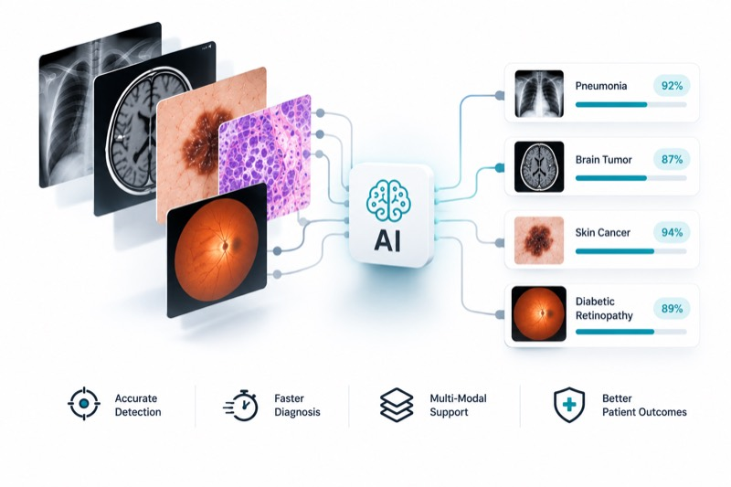
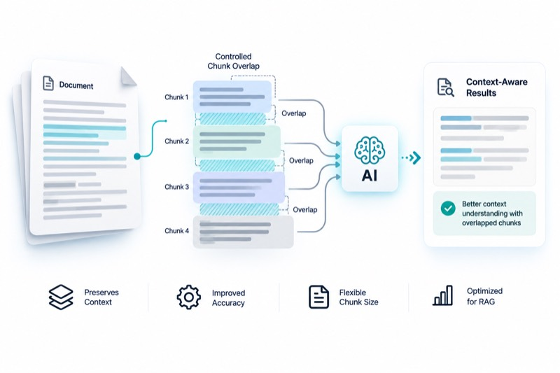
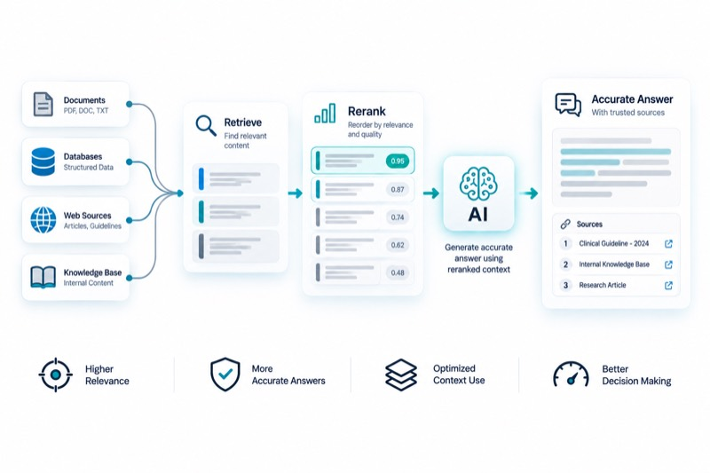
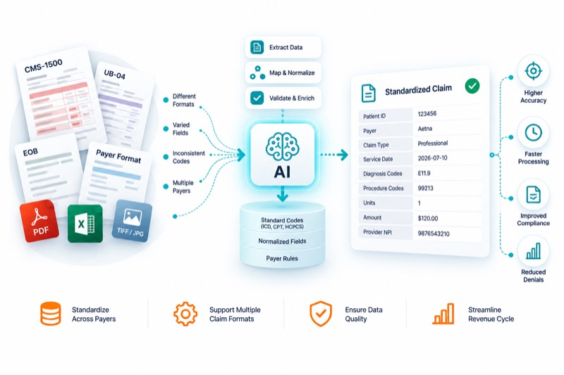
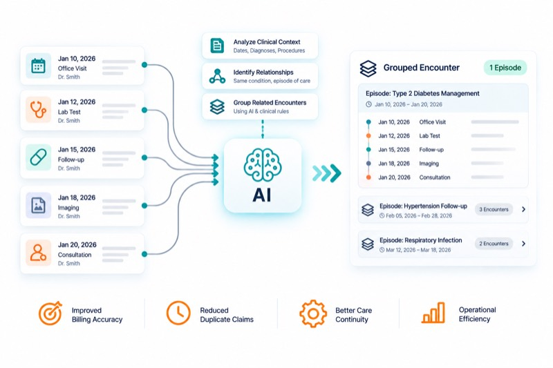
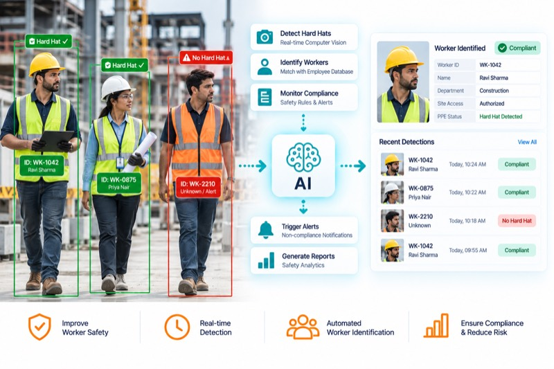

FINANCIAL SERVICES
Intelligent document processing for faster underwriting.
View case study arrow_forward40%Faster diagnosis
95%+Model accuracy
ImprovedPatient outcomes
Explore ready-to-run AI solutions that work securely in your environment.
Start ExploringshieldEverything runs in your browser — nothing you type, record, or upload is sent to Tathastha Labs or any server. Not a medical device: for demonstration only, not clinical or diagnostic use.
Extract patient, clinician, and facility names from raw clinical text using a named-entity model.
Explore Solutions arrow_forwardClassify any photo in-browser — upload, preprocess, inference, ranked output.
Explore Solutions arrow_forward
Recognize disease and condition mentions in clinical notes with a biomedical NER model.
Explore Solutions arrow_forwardRecord a visit and get a structured note — transcription, then drafting, all on-device.
Explore Solutions arrow_forwardPhotograph a receipt and extract vendor, date, and totals via OCR and a small instruct model.
Explore Solutions arrow_forwardUpload a document and ask it questions — retrieve, then generate, entirely on-device.
Explore Solutions arrow_forward
The same retrieval pattern, with chunk overlap you control so split facts aren't missed.
Explore Solutions arrow_forward
Cast a wider net, then re-score candidates with a cross-encoder for a stronger final answer.
Explore Solutions arrow_forward
Vote across claim lines and classify fields valid/invalid/null — real logic from an open-source healthcare-data library.
Explore Solutions arrow_forwardProbabilistic record linkage with real trained weights — the same math behind patient-matching engines.
Explore Solutions arrow_forwardReal CMS-HCC demographic and hierarchy logic, with your own coefficients — no invented numbers.
Explore Solutions arrow_forward
Group claims from a flat file and a FHIR feed into one real-world encounter using real chaining rules.
Explore Solutions arrow_forwardDetect coveralls, face shields, gloves, goggles, and masks in a photo with a real fine-tuned object-detection model.
Explore Solutions arrow_forward
Enroll a worker's face, then check a site photo — a violation gets tied to a specific identified person, not just a box.
Explore Solutions arrow_forwardDraw a hazard zone on any photo and flag every detected person whose position overlaps it.
Explore Solutions arrow_forward
Real-time hair segmentation and face tracking on your live camera, recoloring hair while preserving its natural highlights and shadows.
Explore Solutions arrow_forward
A named-entity model finds people, organizations, and locations in raw clinical text — patient and clinician names, facility names — the same category of model that underlies de-identification and structured-extraction pipelines.
~45 MB first run only
This is a general-purpose vision classifier, not a diagnostic model — we're showing the mechanics of an in-browser imaging pipeline (upload → preprocess → inference → ranked output), the same shape as the modality-specific models we build for imaging engagements.
~90 MB first run only

An open-source biomedical NER model, fine-tuned specifically to recognize disease and condition mentions in clinical text — the kind of model that feeds structured problem lists and registries.
~65 MB first run only

Speech is transcribed first, then a small instruct model drafts a structured clinical summary from the transcript — the same two-stage pattern behind our ambient scribe work, running entirely on-device here. Both models are small for browser-friendly size, so treat the formatting as a rough draft, not a polished SOAP note — production engagements use larger, evaluated models for that.
~340 MB first run only

Text detection finds and reads every line on the page, in the language you choose, then a small instruct model turns the raw text into structured fields — vendor, date, totals. The same detect-then-structure pattern behind document-processing pipelines, running entirely on-device here.
~20 MB first run per language, plus the drafting model used above

Text is split into passages and embedded, then a question is matched against the most relevant passages and answered from them alone — the same retrieve-then-generate pattern (naive RAG) behind most document Q&A systems, indexed and queried entirely on-device.
Plain text only, 1 MB max. ~25 MB first run for the embedding model, plus the drafting model used above. Larger documents take longer to index.
Passages are cut with a fixed size but the overlap between consecutive passages is yours to set. More overlap means a fact split across a chunk boundary is less likely to be missed, at the cost of indexing more redundant text. Re-indexing here updates the document used by this and the reranking playground below.
Reuses the embedding and drafting models already loaded above.
Instead of trusting embedding similarity alone, this pulls a wider pool of candidate passages, then a cross-encoder reranker scores each one against the question directly — a slower but more accurate second pass. The top three reranked passages each generate their own answer, so you can compare which passage actually answered the question best.
Uses whichever document you indexed in Naive or Advanced RAG above. ~15 MB first run for the reranker.

A claim can arrive with several lines, and a field like admission type is sometimes coded inconsistently across them. This "votes" across a claim's lines — the most-frequent value wins — to pick one claim-level answer, then classifies each line-level field into valid / invalid / null, exactly the three-bucket split a real data-quality pipeline uses.
The voting logic, the valid/invalid/null classification, and the UB-04 admission type codes below are copied from an actual open-source healthcare-data dbt project's normalization and data-quality models — including a real quirk: its paid-amount check only has valid/null buckets, so a negative amount still counts as "valid" there. The NPI/ICD-10 reference lists here are a small illustrative sample, not the full real terminology tables. Runs entirely in JavaScript — no model download.
Column headers just need to resemble the sample below (e.g. "ClaimID" or "Claim Number" both work) — exact wording isn't required.

A pair of records only gets compared if they share a blocking key (exact match on name+DOB, or on SSN alone). Each shared field then contributes a Bayes factor — how much more likely a true match is to agree this way than two random people are — multiplied against a prior to get a match probability. Pairs scoring ≥ 0.70 auto-link, 0.50–0.70 go to a review queue, below that they're dismissed.
Uses the real blocking rules and trained comparison weights (m/u probabilities) from an actual open-source Splink-based record-linkage model, not invented weights — including its real limitation: first/last name similarity is plain string similarity, with no nickname dictionary. Runs entirely in JavaScript — no model download.

CMS-HCC risk adjustment sorts each patient into a demographic segment (community non-dual aged, institutional, new enrollee, etc. — CMS's actual category codes), then sums a demographic factor with disease-category factors. A condition's more-severe HCC excludes its milder version via an explicit exclusion list — not "pick the bigger number" — so it isn't double-counted.
The demographic-segment logic and the exclusion-list hierarchy mechanism below are copied from an actual open-source healthcare-data dbt project's CMS-HCC model. Its own coefficient seed tables ship empty in that project too — CMS's official rate-table numbers aren't redistributable — so the numbers below are clearly-marked placeholders for you to replace with official CMS Rate Announcement values, exactly as that project requires. Runs entirely in JavaScript — no model download.
Headers just need to resemble the sample below — exact wording isn't required.
Headers just need to resemble the sample below — exact wording isn't required.
Headers just need to resemble the sample below — exact wording isn't required.

A single ED visit often produces two separate claims — an institutional (facility) claim and a professional (physician) claim — and today those might arrive as a claims flat file from one system and a FHIR feed from another. This runs claims from both source shapes through the same chaining rules for deciding which claims belong to one emergency-department encounter: an exact same-day/same-facility match, a next-day transfer, a general date overlap at the same facility, or — since professional claims don't carry facility or discharge fields — a looser overlap-or-adjacent-day rule when either claim is professional.
The four chaining rules are copied from an actual open-source healthcare-data dbt project's real emergency-department encounter-grouping model, applied here with a union-find over the same pairwise conditions instead of that model's original row-closure SQL — same rules, same resulting groups. The FHIR shape uses the standard public FHIR Encounter resource fields, not that project's own FHIR-ingestion connector code (which lives in separate repositories this build didn't have access to). Worth flagging directly: that project's real connectors cover claims flat files, FHIR feeds, EHR database extracts, and ADT feeds — no CCDA support was found anywhere in its actual code, so it's left out here rather than invented. Runs entirely in JavaScript — no model download.
Headers just need to resemble the sample below — exact wording isn't required.
A real object-detection model — DETR, fine-tuned on the CPPE-5 dataset — finds coveralls, face shields, gloves, goggles, and masks and draws a box around each. Use a photo, or turn on your camera for continuous analysis of a live feed — the same shape of pipeline behind real video-analytics safety monitoring, running periodically rather than a single one-off check.
Fine-tuned checkpoint and dataset are both openly published (see /models/README.md).
~43 MB first run only, self-hosted from this site — no third-party model host is queried.
A YOLOv8 model trained specifically for hard-hat compliance runs alongside a face-recognition model, so a violation isn't just a red box on a screen — it's tied to a specific person. Enroll a worker below with a photo and a name, then check a second photo — or a live camera feed, continuously re-identifying and re-checking every couple of seconds — to see them matched against their PPE status.
Enrollment and matching both run entirely on-device — nothing about the photo, the name, or the computed face signature is ever sent anywhere. Use your own photo rather than a stranger's: this step only makes sense with a face whose use you actually control. ~12 MB hard-hat model self-hosted here, plus ~14 MB of face-recognition weights loaded from their publisher's CDN, first run only.

Draw a rectangle over any hazardous area — a loading dock, a forklift lane, equipment with a live exclusion radius — on a photo or directly over your live camera feed, and a general-purpose object detector flags every person whose position overlaps it, continuously. This is the same underlying pattern (person detection plus a geofenced rule) behind proximity and restricted-access video analytics on a real production floor, in any industry.
~40 MB first run only.
Drag on the image or live feed below to draw a restricted zone.
Google's MediaPipe hair-segmentation model finds the hair region on every video frame; a luminance-preserving color blend recolors it while keeping natural highlights and shadows intact — the same core mechanic behind commercial AR beauty SDKs (ModiFace, Banuba, DeepAR), running entirely in your browser. An optional face-mesh overlay (478 points, also MediaPipe) shows the head-tracking layer that a full 3D try-on would anchor styling to.
Worth being direct about scope: this proves the core segmentation → recolor → render pipeline, not a production SDK. It doesn't do strand-level alpha matting, 3D hairstyle overlays, or the native 60fps mobile performance a real product would need — see the case study write-up for that gap. Hair-segmentation model ~1 MB; face-mesh model (loaded only if you enable it) ~4 MB. Both loaded from Google's model CDN, first run only — nothing about your camera feed is ever sent anywhere.

Tell us what you're trying to achieve. We'll help you explore the right approach from idea to impact.
View All arrow_forwardSend us the paragraph you'd normally write to a colleague. We'll get back to you within 24 hours.
mailhello@tathastha.com